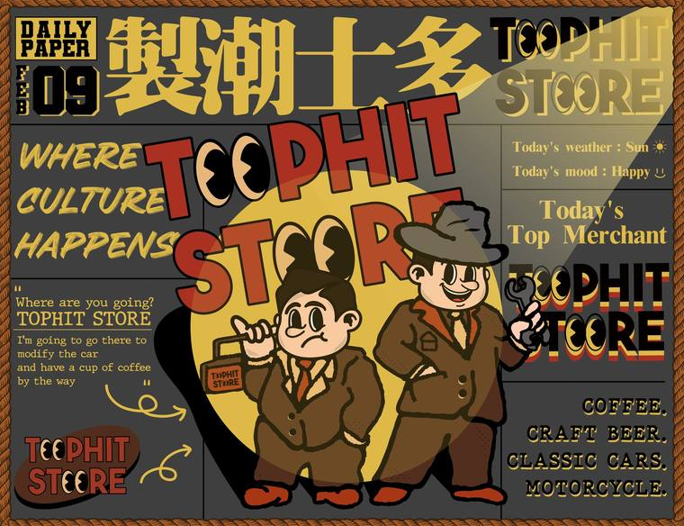
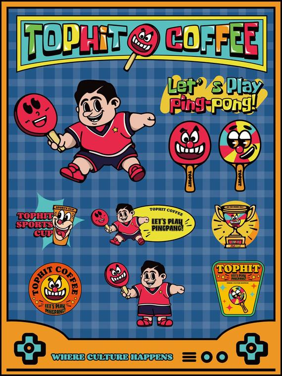
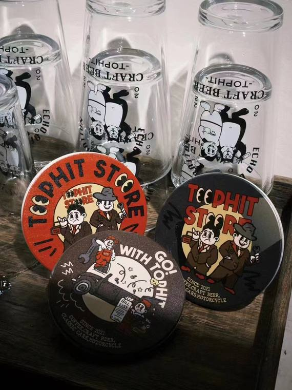
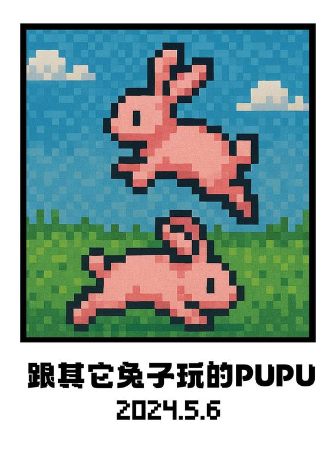
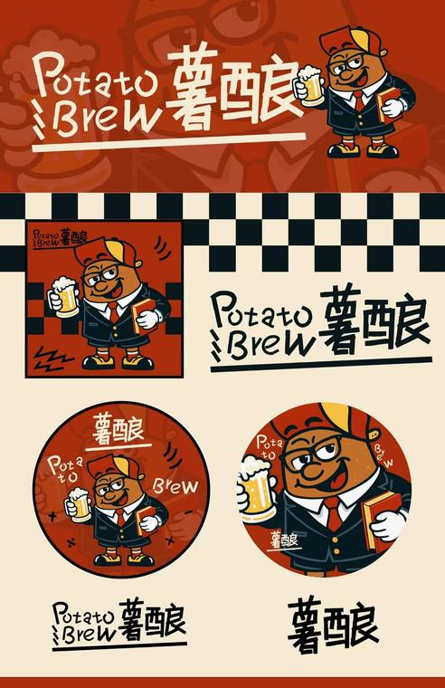
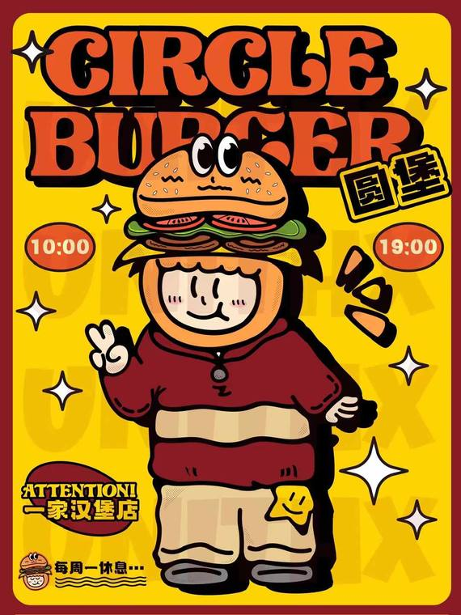
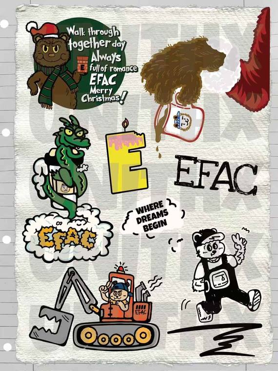

我在做的
根据品牌调性和品牌故事，创意结合设计出与品牌气质相符合的有趣IP，强调IP的可持续性和可延展性！
Original IP / Brand Visual / Commercial Landing
我的奇思妙想呈现到真实的世界



根据品牌调性和品牌故事，创意结合设计出与品牌气质相符合的有趣IP，强调IP的可持续性和可延展性！
擅长趣味卡通、美式复古、手绘线条风格，也热爱创新，乐于结合所有好玩的，有趣的设计风格去做出更好的创意呈现。
围绕角色去输出一整套品牌视觉， Logo、海报、门头、杯套、纸袋、贴纸和周边等，让品牌能被看见、被传播、与客户建立真实互动。
一个走路必须戴耳机，常年背双肩包的黄头发角色。
IP 不只停在插画里，它可以成为一家店的招牌、一张促销海报、一只杯子、一个贴纸、一段会被记住的消费场景。
复古招牌、餐饮菜单、玩具、包装、咖啡、夜晚设计、贴纸和路边广告，共同组成 UNI 的视觉采集本。
和AI拥抱，在科技的海洋里游来游去，想要创作更有趣的东西，想要让自己的设计更加发光。

我自己进入我的设计宇宙，让设计融入生活，再通过设计呈现出对品牌更深刻的理解。
Open For Collaboration优先呈现世界观完整、商业延展充分、第一眼冲击强的原创 IP。
网站的阅读顺序以“角色、品牌、场景、物料”展开，让单个项目像一份创意提案，也像一家店的成长记录。



把平面系统推进到杯套、包装、衣物、橱窗、门头和实体公仔。